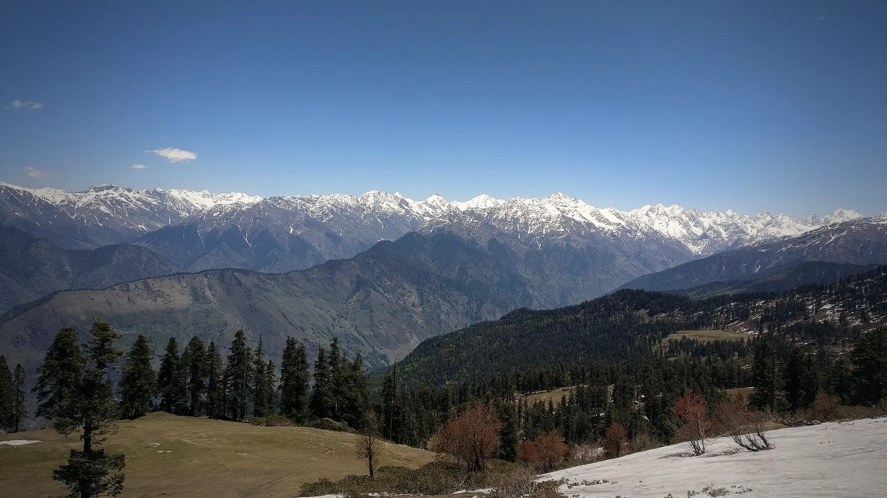

02Day 2 · Sankri · 1,950 mkm 0.1
Into Govind park
~197kmFrom Dehradun · 9–10 h by road
The trek starts at Sankri, inside Govind Pashu Vihar National Park.

Photo: Pathaharapathik, CC BY-SA 4.0फुलारा रिज · Uttarkashi, Uttarakhand
The trek in one line, and what you can do with it.
Phulara is a beginner's ridge walk: one long day on top, with peaks on every side.
4 stops on the map, then the climb. Scroll the stops and the map follows.
02Day 2 · Sankri · 1,950 mkm 0.1
~197kmFrom Dehradun · 9–10 h by road
The trek starts at Sankri, inside Govind Pashu Vihar National Park.
02Day 2 · Juda Ka Talab · 2,700 mkm 4.9
5kmToday · From Sankri
Juda Ka Talab is also a camp on the Kedarkantha trek; the Phulara route turns the other way from here.
04Day 4 · Phulara Ridge · 3,700 mkm 12.0
11kmRidge day · About 7 h
Day 3 climbs 500 m at 45–50° on loose sand to Bhoj Gadi. Day 4 reaches the ridge about 2 km later and follows it, with Swargarohini, Bandarpunch and Kalanag on one side.
05Day 5 · Taluka · 2,108 mkm 28.9
8kmToday · About 5 h
The last day drops through a forest of fallen logs and creepers to Taluka, an old village of wooden houses above the Supin river.
Best in May–Jun, Sep–Oct.
Dark: the months the trek’s sources call its best. Mid: possible. See all treks in May.
Base prices from 8 operators’ own pages, per person. GST and travel are often extra. Treqz sells nothing.
The practical things, then the questions people ask.
Jio and BSNL work at the start. On the ridge, signal is weak or gone.
Himalayan Dream TreksSankri homestays have plugs, but power cuts are long. No electricity after Sankri.
Bikat AdventuresThree vegetarian meals a day, plus evening tea and snacks. Eggs on some days.
Bikat AdventuresTwin-sharing tents. Every camp has a dry pit toilet. Carry your own toilet paper.
Bikat AdventuresA porter or mule for your bag costs ₹1,224 with Bikat, ₹1,600 with The Searching Souls and ₹1,800 with Trekkaro.
Bikat AdventuresAbout 29.0 km of walking over 6 days on the trail.
The highest point is 3,700 m, about 1,770 m above the start.
Its sources grade it Easy.
May–Jun, Sep–Oct.
₹8,500 to ₹11,500 per person: base prices from 8 operators' own pages. GST and travel are often extra.
Jio and BSNL work at the start. On the ridge, signal is weak or gone.
Warm jacket, Full-sleeve sweater or fleece, Thermals, upper and lower, Full-sleeve T-shirts, Quick-dry track pants ×2, Rain jacket and pants, Waterproof warm gloves, Woollen cap. The full list is on the 3D page.
Its sources do not list December to February as a trekking season.
Its sources grade it Easy and it takes 6 days on the trail, with a highest point of 3,700 m.
Kedarkantha, Bali Pass, Har Ki Dun, Rupin Pass, Dodital.


Treks in May · Treks in June · Treks in September · Treks in October · Treks in Uttarakhand · Beginner Treks in Uttarakhand · Easy Treks in India for Beginners · 6 Day Treks in India · Treks in Uttarkashi, Uttarakhand · Treks in India Under ₹10,000 · Phulara Ridge vs Kedarkantha · Phulara Ridge vs Har Ki Dun · Phulara Ridge vs Bali Pass · Free trek finder · All treks in 3D